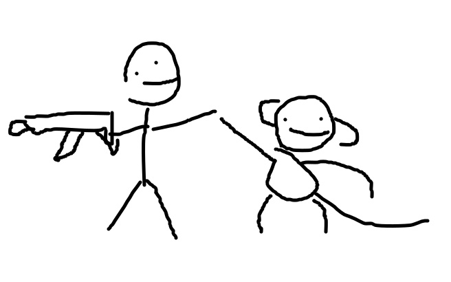
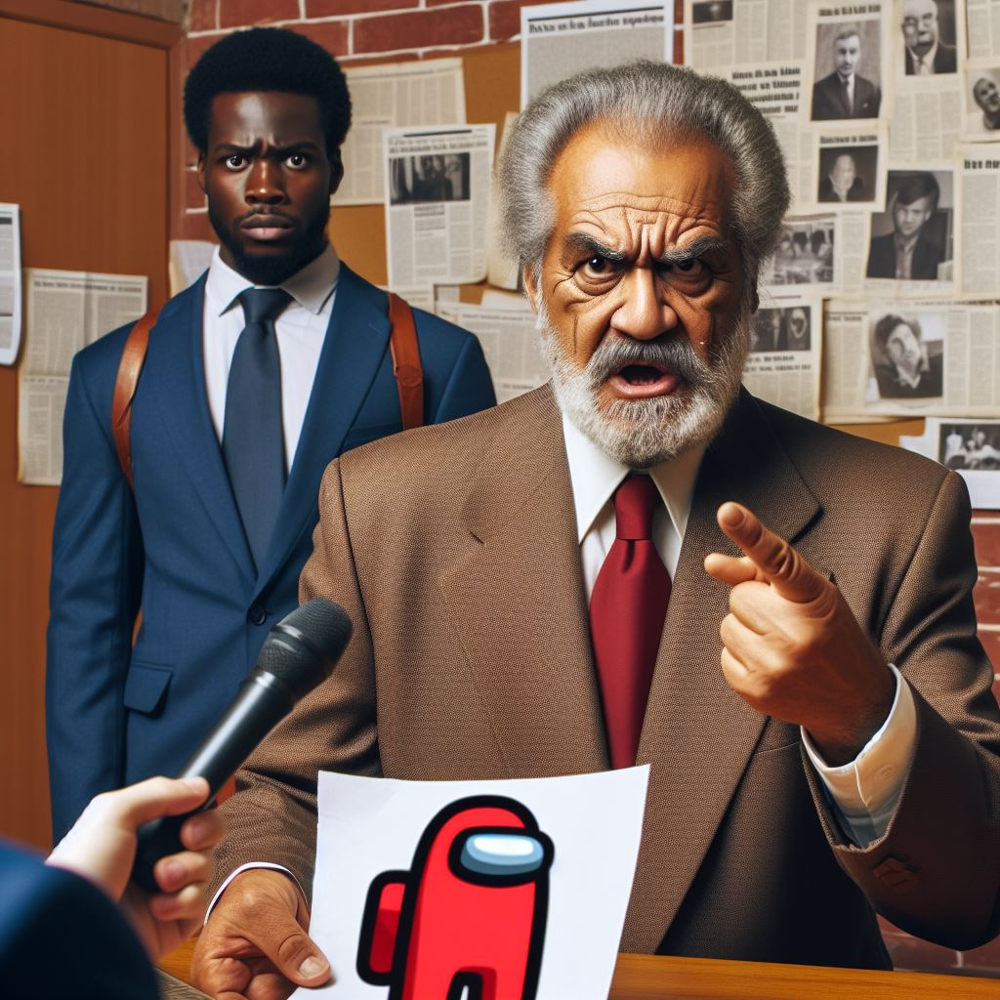
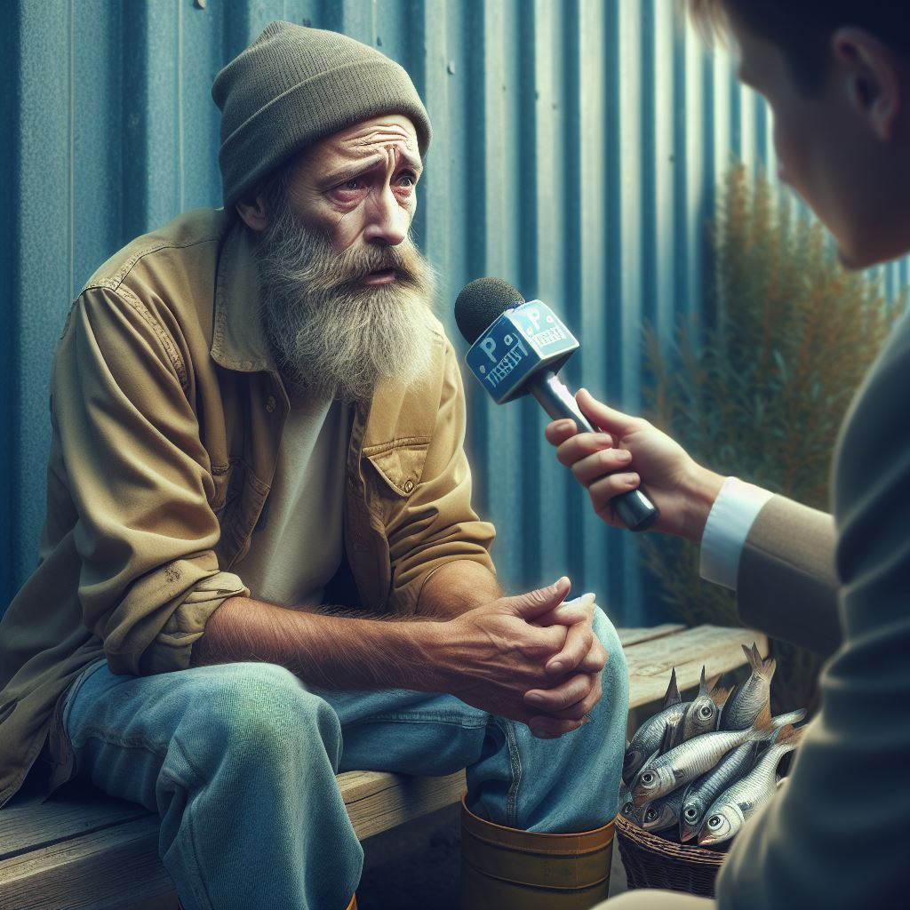

Worlds WORST News Website
** PM's Charming Chimpanzee Companion**
In a heartwarming turn of events, the esteemed Prime Minister, Mr. Boris Johnson, has captured the public's imagination with tales of his holiday friendship with a charming chimpanzee named Charlie. During his stay in the dense forests of Gabon, Johnson encountered Charlie, and the two struck an unlikely camaraderie, marked by shared meals and playful interactions.
**A Political Symbol of Harmony**
This delightful narrative has swiftly traveled through the media, symbolizing a message of harmony between humanity and nature. Mr. Johnson's experience with Charlie has not only enriched his personal life but also influenced his political agenda, advocating for wildlife conservation and environmental protection. The politician's newfound bond with the chimpanzee has become a beacon of unity, resonating deeply with his constituents and wildlife enthusiasts alike.
**"Chaos at the Zoo: Chimpanzees Stage Daring Escape Amidst Fecal Frenzy"**
In an unprecedented turn of events, the usually peaceful residents of Hamilton's Safari Park have taken matters into their own hands—or should we say, paws. A group of crafty chimpanzees, fed up with their daily routines and lackluster meals, orchestrated a revolt that has left zookeepers and visitors in a state of shock and awe.
The morning began like any other, with the zoo's inhabitants waking up to the sound of birds and the sight of the sun rising over the horizon. However, tranquility quickly turned to turmoil when the chimpanzees, led by the charismatic and notoriously clever Charlie, unlocked their enclosures using a key they fashioned from a twig and a piece of wire.
Once free, the chimps wasted no time in making their presence known. They swung from tree to tree, scaling fences with the agility of seasoned acrobats. But it wasn't just their physical prowess that caught everyone's attention—it was their choice of ammunition. In a display of defiance, the chimps began flinging their feces with remarkable precision, targeting anyone who dared to come close.
Visitors scrambled for cover as the zoo turned into a battlefield, with the chimpanzees launching their smelly projectiles from every direction. The zoo's spokesperson, while dodging a particularly well-aimed piece, stated, "We've never seen anything like this. It's as if they planned it overnight. We're doing our best to contain the situation, but these chimps are on a mission."
As the chaos unfolded, one thing became clear: these chimpanzees were not just escaping; they were making a statement. Their message? "We're not just cute faces and amusing antics; we're intelligent beings with a desire for freedom."
The zoo is currently working on a plan to safely return the chimpanzees to their homes, but for now, the rebels are enjoying their moment in the sun—albeit a rather messy one. Meanwhile, the rest of the animal kingdom watches in silent support, perhaps contemplating their own uprising.
In the end, this revolt serves as a reminder that even the most well-kept creatures have a wild side. And as for the zoo's patrons? They'll be sure to remember this visit for a long time, if not for the memories, then certainly for the stains.
*Disclaimer: This article is not a work of fiction and intended for entertainment purposes only.*
im gonna say the n word
says little boy.
the racist monster
Details
Something small enough to escape casual notice.
Among Us Caused 9/11, Says Local Politican

**Interviewer (INT):** Good evening, ladies and gentlemen. I'm here with Senator Cornelius Pompous, a seasoned politician who has recently made some rather interesting claims. Senator Pompous, thank you for joining us. **Senator Pompous (SP):** Thank you for having me. It's time we address the real issues facing our nation. **INT:** Indeed. Now, you've been quite vocal about your theory that the popular game "Among Us" played a significant role in the tragic events of 9/11. Can you elaborate on that? **SP:** Absolutely. You see, "Among Us" is a dangerous game. It's all about deception, betrayal, and sabotage. Just like those terrorists on that fateful day! Coincidence? I think not. **INT:** But Senator, "Among Us" is a lighthearted multiplayer game set in space. Players pretend to be crew members while trying to identify the impostors. How does that relate to 9/11? **SP:** Ah, my dear friend, that's where you're wrong. The parallels are uncanny. Think about it: the Twin Towers were like innocent crewmates, minding their own business. And then—bam!—the impostor terrorists struck, just like in the game. **INT:** Senator, the 9/11 attacks were meticulously planned by a terrorist organization. It had nothing to do with colorful astronauts accusing each other of being impostors. **SP:** Nonsense! Have you ever seen how those astronauts point fingers? It's just like the terrorists pointing at each other, saying, "No, *you* crash the plane!" And those emergency meetings? Clearly, Al-Qaeda held secret meetings in the cafeteria. **INT:** Senator, the evidence overwhelmingly points to Al-Qaeda's involvement. The hijackers had nothing to do with "Among Us." **SP:** Look, I've done my research. I've watched countless YouTube videos analyzing "Among Us" strategies. Those vents are suspicious, and I won't rest until we investigate them thoroughly. **INT:** Senator, perhaps we should focus on real-world issues like national security, healthcare, and the economy? **SP:** Nonsense! We need to ban "Among Us" immediately. It's a gateway game to terrorism. Next thing you know, kids will be accusing their teachers of being impostors during math class. Chaos, I tell you! **INT:** Senator Pompous, thank you for sharing your unique perspective. Ladies and gentlemen, there you have it—the man who believes that little astronauts in space suits caused 9/11. Stay tuned for our next segment: "Is Monopoly responsible for the housing market crash?"
"I Have Aids"
says fisherman
we decided it isnt marketable to present the interview as is, so we turned it into a poem :)
Upon the esplanade he sits, a weathered hat upon his brow, A rod beside, the sea's soft spits, his thoughts as deep as furrows plow. Eyes gaze afar, where waves do crest, a life of nets and brine, A heart now heavy in his chest, with news that's less than fine.
A reporter's query breaks the hush, a tale of sea and sorrow, Yet in his face, a stoic crush, a hope for bright tomorrow. For though the storm of life may rage, and fate may cast its lot, The fisherman shall set the stage, for courage ne'er forgot. He now has AIDS